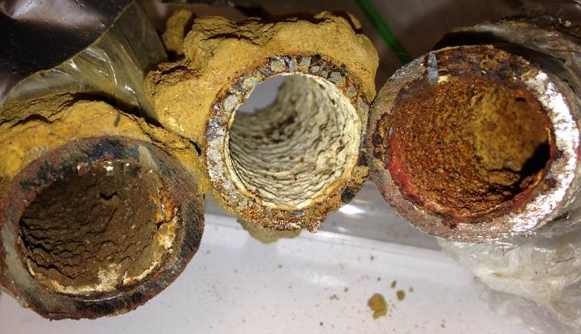
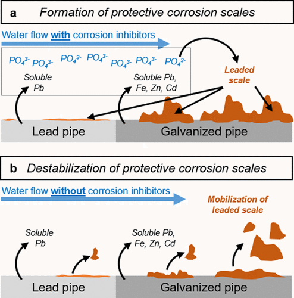
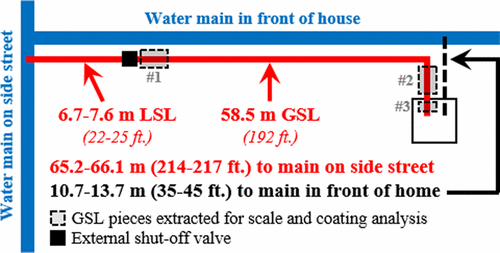
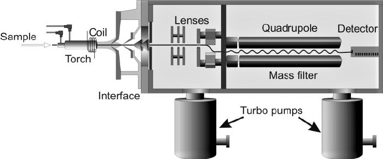
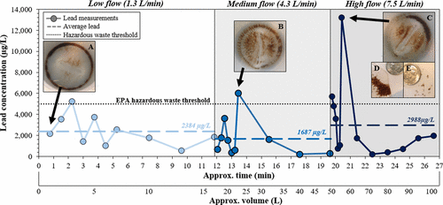
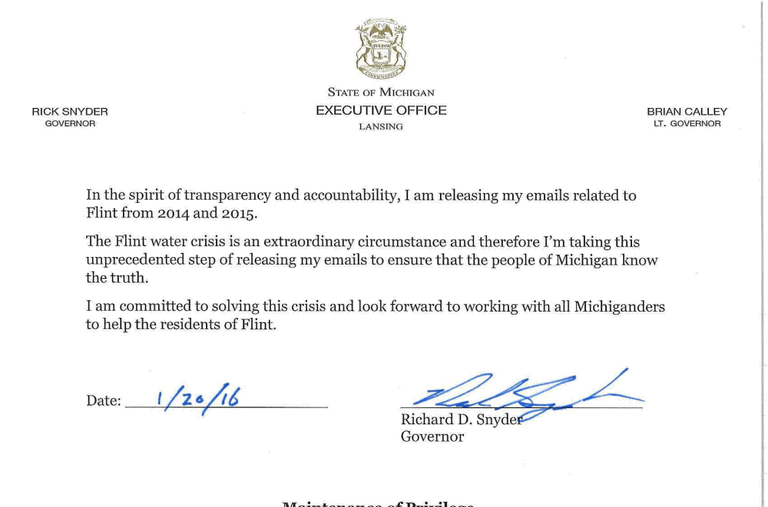
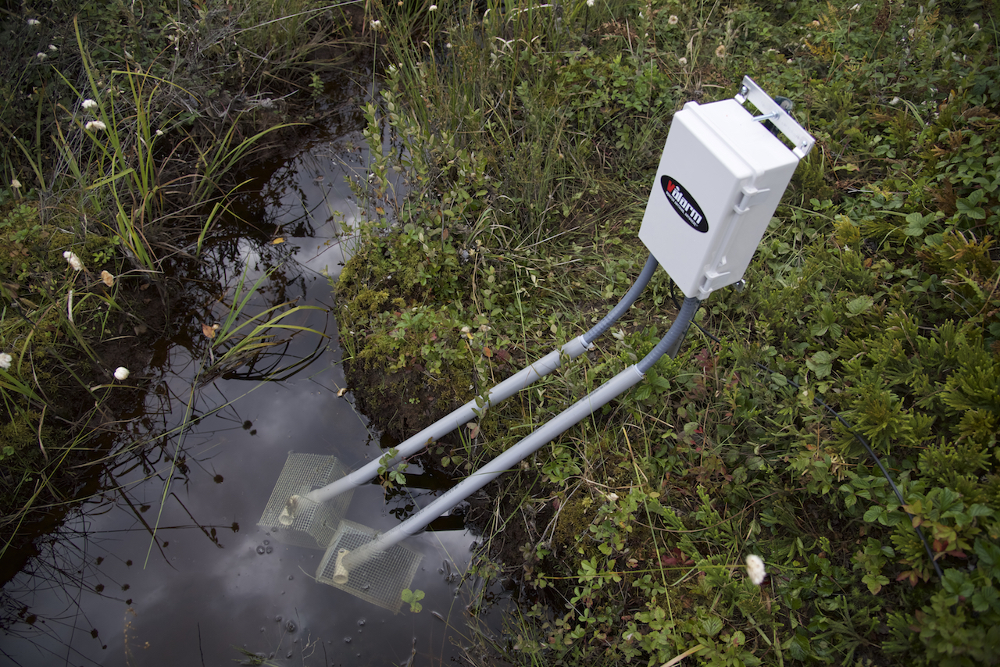

Background
In 2014, Flint, Michigan decided to switch water providers from the Detroit Water and Sewerage Department (DWSD) to the Karegnondi Water Authority. During the transition period, they decided to use the Flint River as their main water source for two years. However, instead of taking the suggested steps to proactively treat the water, they decided to wait and see if any problems arose. In May of 2014, residents started to complain about water quality. The government found E. Coli and total coliform bacteria present in the water, which they addressed by increasing the chlorine content in the water supply. This, as was later demonstrated, would increase the corrosiveness of the Flint River drinking water. General Motors cited this as the reason they stopped using Flint water in their machines in mid-2014.
Different kinds of iron corrosion and rust were found in Flint drinking water pipes. Photo credit: Min Tang and Kelsey Pieper, Flintwaterstudy.org.
In February of the next year, a Flint resident (known as Resident 0), had their water tested and found high lead content in their drinking water. After increasing the chlorine content, Flint's government had not increased corrosion controlling chemicals. Flint spokesman Brad Wurfel then dismissed concerns about lead content in the water. In addition to this statement, Flint officials omitted several homes with high lead content from their report about water quality as they had decided these were outliers. In September 2015, it was determined that 4% of children under 5 had elevated lead levels after the switch, while ~2% had had high lead blood content before the switch. In October, they switched back to the DWSD to try to stop the high lead content. Over the next two months, Flint's mayor, the Governor of Michigan, and President Obama all declared states of emergency in Flint. Finally, over the course of the next half-year, a hearing was held about the Flint water crisis and an independent probe determined that Flint officials were negligent in their handling of the crisis and could've prevented it. In the end many Flint officials were criminally charged in relation to the water crisis, including Gov. Rick Snyder.
The 9 defendants charged in relation to the Flint Water Crisis. (Source: WJRT)
The Study
The information on this page is adapted from Pieper, K., Tang, M., and Edwards, M. (2017). Flint Water Crisis Caused By Interrupted Corrosion Control: Investigating “Ground Zero” Home. Environmental Science and Technology. American Chemical Society. https://doi.org/10.1021/acs.est.6b04034
The Goal:
The goal of the study was to determine the cause of the Flint water crisis. The authors hoped to learn how Flint’s water crisis started and what mistakes in the water-cleaning chemistry were factors in the crisis. The researchers also looked at the amount of lead in the water in order to determine how extreme the specific incidents of lead-contaminated water were. They also discussed ways in which city officials failed to implement safeguards against lead contamination and what those mistakes affected. The authors collected data of water samples from January to April 2015 to determine their lead, iron, and phosphate content, alongside samples from the corroded and non-corroded pipes. The authors used this data to determine the cause of corrosion, lead content, and other contaminants.
How scale forms and is released by changes in water chemistry. Source:Kelsey Pieper, Min Tang, & Marc Edwards, Environ. Sci. Technol.
The Methodology:
6 water samples were collected in the latter half of January 2015 by Resident 0. These samples were then sent to the researchers at Virginia Tech, who then extracted aliquots after shaking the bottle to re-dissolve any solutes that may have precipitated during travel. These aliquots were then acidified with 2% nitric acid and 2% hydroxylamine and heated at 50 C° for at least 24 hours. The researchers used Inductively Coupled Plasma-Mass Spectrometry to analyze the metals in the water. After the city shut off Resident Zero’s water for three weeks, seven sequential 1L samples and 250 mL flushed samples were taken after the lines were flushed for 25 minutes and let to rest for 6 hours at three different flow rates. The researchers at Virginia Tech then assessed water clarity, color, and cloudiness. They performed the same lead analysis on three of these samples (different flow rates) to determine the lead content. They also dug up two sections of the galvanized iron water pipe for further analysis of the corroded scale. Finally, the researchers used Spearman’s rank correlation to determine the connections between lead content and other parameters of water quality.
The methodology of lead pipe collection for analysis. The collected pipes can be seen in the background information section. Kelsey Pieper, Min Tang, & Marc Edwards, Environ. Sci. Technol.
The Chemistry
After recieving the original water samples from Resident 0, the researchers at Virginia Tech extracted one 10ml aliquot from each of the six samples after shaking the bottles to redissolve any lead precipitate. They acidified these aliquots using 2% hydroxylamine and 2% nitric acid and later heated them to 50°C for 24 hours. Following this, they used Inductively Coupled Plasma-Mass Spectrometry (ICP-MS) to analyze the lead content/concentration of the samples. ICP-MS uses plasma to atomize samples, with then produce ions that can be detected by using mass spectrometry (5). They performed this same procedure for each of the other sample sets of water they recieved. They also took scrapings of corrosion scales from the pipe samples they recieved and followed the same procedure as previously described, with the only difference being that they dissolved the scrapings in 100ml of water. They also used x-ray flourescence spectrometry to analyze the pipe surface. The XRF spectrometer uses x-rays to analyze and map hard surfaces with minimal damage. It also uses the effects of x-ray interactions with differnt materials to determine the composition of whatever it is scanning (6).
Cross section diagram of an ICP-MS. Source: Wilschefski, S., & Baxter, M. Clinical Biochemist Reviews. Adapted from Košler J, Sylvester PJ. Rev Mineral Geochem.
The Data Interpretation:
The authors determined that the flow rate of water through the corroded galvanized iron pipes and lead pipes did not necessarily determine the amount of lead present in the water, unless the flow rate was increasing, which caused the amount of lead carried by the water to spike. Iron in water concentrations were highly correlated with lead in water concentrations, which showed that the iron and lead were caused by the destabilization of the lead containing corrosion rust layers. Levels of lead were significantly over the EPA action level, while several were above the EPA’s hazardous waste level. The drinking water from the DWSD contained ~1.07 mg/L of orthophosphate, which causes insoluble scales with soluble metals inside water pipes over long periods of time. When Flint switched water sources and stopped adding orthophosphates to the water, the scales started to break down. By simply adding back the orthophosphates, lead and iron levels would have likely dropped by about two thirds.
Lead concentrations at multiple flow rates. Kelsey Pieper, Min Tang, & Marc Edwards.Environ. Sci. Technol.
Government Failings
There were many different government failings throughout the crisis. These failings exacerbated the problems, and if they had been addressed earlier, they could have prevented much of the damage. The Flint water treatment plant didn't follow the requirements of installing and maintaining corrosion control systems and maintaining sampling sites to regularly test water quality. They also didn't keep track of lead service lines, meaning their map of lead piping was incomplete or just inaccurate in some places. The Michigan Department of Environmental Quality (MDEQ) didn't require the corrosion control, which is something the EPA disagreed with. When data came out about high lead levels in homes the MDEQ prevented Flint from implementing corrosion control. Instead, they just ask for more tests to be performed in order to confirm widespread high lead levels. They only required Flint to implement corrosion control in 2016, long after the crisis started. It was determined that the MDEQ didn't do their job by not forcing Flint to follow the rules set by the EPA. EPA officials didn't effectively communicate their expectations or establish clear roles and responsibilities. Some other similar crises are those associated with Chinese drywall (CDW) and the San Francisco–Oakland Bay Bridge (SFOBB).
An official statement from Gov. Snyder regarding the lack of transparency.(Source: NY Times)
Next Steps
There are several next steps that should be taken by the government in order to make certain nothing like the Flint Water Crisis ever happens again. In a report, the EPA made several recommendations for officials across the country to implement. While these recommendations were made after and tailored to the Flint Water Crisis, they can be applied to any jurisdiction. The EPA recommended that local water treatment plants should be regularly checked on by the state. Officials on all levels of the government, from national to state-wide to regional to local, must communicate to ensure everyone is following the rules in the same way while also more effectively delegating tasks and responsibilities to different government agencies and private corporations. This will allow the decision-makers to more effectively analyze risks and decide on what needs to be done. Next, local and regional agencies need to better document their work, from locations of lead pipes to water quality test results, and share them all with the public in order to be held accountable for their actions. Finally, employees should be better trained to prevent these mistakes and react appropriately to concerning test results and civilian complaints, which are also to be implemented.

A warning found on a Flint water fountain warning residents to avoid drinking the water in May 2016 (after 18 months of denying the crisis). Photo credit: Carolyn Kaster, AP.
Other groups of scientists, research groups, and think tanks believe that as much data as possible should be collected on these events and more funding should be allocated to water quality research in order to make simulations and other programs that can be used to more effectively foresee potential issues. These same tools can be used for decision-makers to be more informed, especially if they themselves aren't chemists. This is all tied to data analysis, which would be improved if there were automated water quality sensors placed at multiple intervals throughout the pipe system. This would inform scientists on what is happening in real-time, potentially reducing human error due to their being uninformed to what is happening at that exact moment. These sensors could also be used to detect long-term changes in water make-up and quality, leading to a better understanding of how water in a certain location changes over time. Finally, it would be prudent to invest in understanding how water crises such as Flint's impact the region financially, since that type of argument would likely appeal to policy-makers and their constituents.
An example of a commercially produced water quality sensor. (Source: valarm.net).
Resources
1) Kennedy, M. Lead-Laced Water In Flint: A Step-By-Step Look At The Makings Of A Crisis. (2016). Retrieved 12 February 2021, from https://www.npr.org/sections/thetwo-way/2016/04/20/465545378/lead-laced-water-in-flint-a-step-by-step-look-at-the-makings-of-a-crisis
2) Pieper, K., Tang, M., and Edwards, M. Flint Water Crisis Caused By Interrupted Corrosion Control: Investigating “Ground Zero” Home. Environmental Science and Technology. American Chemical Society. (2017). Retrieved 3 February 2021, from https://doi.org/10.1021/acs.est.6b04034
3) Scully, J. R. The Corrosion Crisis in Flint, Michigan: A Call for Improvements in Technology . (2016). Retrieved 12 February 2021, from https://www.nae.edu/155382/The-Corrosion-Crisis-in-Flint-Michigan-A-Call-for-Improvements-in-Technology-
4) U.S. ENVIRONMENTAL PROTECTION AGENCY: OFFICE OF INSPECTOR GENERAL. (2018). EPA. Retrieved 12 February 2021, from https://www.epa.gov/sites/production/files/2018-07/documents/_epaoig_20180719-18-p-0221.pdf
5) Wilschefski, S., & Baxter, M. (2019). Inductively Coupled Plasma Mass Spectrometry: Introduction to Analytical Aspects. Clinical Biochemist Reviews, 40(3), 115-133. doi: 10.33176/aacb-19-00024
6) Wirth, K. & Barth, A. X-Ray Fluorescence. (2021). Carleton College. Retrieved 17 February 2021, from https://serc.carleton.edu/research_education/geochemsheets/techniques/XRF.html